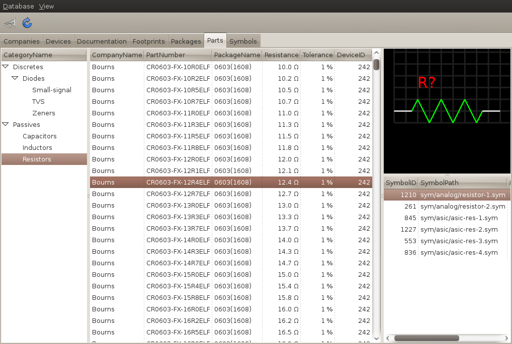

This page serves as a working document for the design of a parts manager for gEDA. Please submit feedback to the geda-dev or geda-user mailing lists.
The part manager uses a relational database to store parts used in the development of electronic assemblies. The part manager also stores attributes for these parts and can place these attributes into a component or symbol for placement into schematics.
The part manager provides a GUI that allows the user to browse and edit the data in the part database. The user can select parts in the GUI, then cut and paste them into their schematic.
The following figure shows the relationship between the parts manager and other applications in the gEDA suite.

The part database can be configured as either local or remote. In the remote configuration, many users can access the part database concurrently.
The following figure shows the entity relationships for a part in the resistor category. The category does not reference any tables in the resistor category, but only contains the view name and stored procedures to manipulate a part within the resistor category. This mechanism allows the tables and relationships to vary by category.

The database always contains tables to store the following entities. The database contains additional tables to store specific categories of parts (e.g. a capacitor table, a diode table, a resistor table, etc…). This list excludes junction tables and metadata tables.
A class of parts (e.g. capacitors, diodes, resistors, transistors, etc…). A category can contain sub-categories (e.g. small-signal diodes, TVS diodes, zener diodes, etc…) Sub-categories can include additional sub-categories. All parts within a category or sub-category share the same set of attributes (e.g. forward voltage, maximum current, power dissipation, etc…). Sub-categories do not need to inherit the attributes of their parent.
The category stores metadata for mapping the part’s database columns to the component attributes. For numeric attributes, the category stores the column’s unit of measure (e.g. amps, farads, ohms, volts, etc…).
The category also stores the names of database views and stored procedures to access and manipulate the tables of parts within the category.
| Field | Type | Description |
| CategoryID | | Surrogate key |
| CategoryName | String | The unique name of the category |
| ParentID | | Foreign key to Category |
Currently, a company represents a part’s manufacturer.
| Field | Type | Description |
| CompanyID | | Surrogate key |
| CompanyName | String | The unique name of the company |
A type of part. The device name only provides a mechanism to map parts to symbols. A part in the library of device resistor can use all the symbols in the library where device is resistor. Similarly, a symbol where device is resistor can represent any part of device resistor. When importing a symbol, the database uses the value of the symbol attribute DEVICE as the initial value for the device field. The user can change the device field after import using the part manager GUI.
| Field | Type | Description |
| DeviceID | | Surrogate key |
| DeviceName | String | The unique name of the device |
Any file associated with a part. Documents can include datasheets, erata, user manuals, etc… This entity stores a path to the actual document file. The path could either be local or network. The path stored in the database is relative to the base path stored in the configuration file.
| Field | Type | Description |
| DocumentID | | Surrogate key |
| Category | String | The document’s category (e.g. “Datasheet”, “Erata”, “User Manual”) |
| Title | String | The document’s title |
| SourceURL | String | The URL where the document can be obtained on the Internet |
| FileLocation | String | The location of the locally stored document |
The PCB artwork associated with a package. This entity stores a path to the actual PCB footprint file. The path could either be local or network. The path stored in the database is relative to the base path stored in the configuration file.
| Field | Type | Description |
| FootprintID | | Surrogate key |
| FootprintName | String | The unique name of the footprint |
| Field | Type | Description |
| ModelID | | Surrogate key |
| ModelName | String | The name of the MODEL within the model file. |
| ModelPath | String | Absolute path to the model file. |
| ModelType | String | The model type: IBIS, PSPICE, etc… |
When instantiating a component or creating a heavy symbol that uses a Spice model, the following database columns map to the following attributes.
| Column | Attribute | Notes |
| Model.ModelName | MODEL-NAME | |
| Model.ModelPath | FILE | Should use absolute path. |
A part represents a class of components. The database uses this version of the part table when configured to use a flat part table. The flat and hierarchical parts tables are mutually exclusive. The database uses one or the other.
| Field | Type | Description |
| PartID | | Surrogate key |
| CompanyID | | Foreign key to company specifies manufacturer |
| PartNumber | String | The manufacturers’s part number |
| DeviceID | | Foreign key to Device |
Other columns TBD.
A part represents a class of components. The database uses this version of the part table when configured to use hierarchical part tables. The flat and hierarchical parts tables are mutually exclusive. The database uses one or the other.
| Field | Type | Description |
| PartID | | Surrogate key |
| CompanyID | | Foreign key to company specifies manufacturer |
| PartNumber | String | The manufacturers’s part number |
| DeviceID | | Foreign key to Device |
The physical structure, or form-factor, of a part (i.e. 0603, SOT-23, PDIP16). Each package can associate with zero or more footprints. Also, each footprint could represent zero or more packages.
| Field | Type | Description |
| PackageID | | Surrogate key |
| PackageName | String | The unique name of the package |
| Technology | String | The type of package. Either “SMT” or “TH” |
The graphical representation of a part. This entity uses the symbol base filename as the unique name of the symbol. This base filename is relative to one of the component libraries found in the configuration files. The component library paths can either be local or network.
| Field | Type | Description |
| SymbolID | | Surrogate key |
| SymbolName | String | The unique name of the symbol. This field contains the base filename of the symbol. |
| DeviceID | | Foreign key to Device |
Part categories break down classes of parts hierarchically. The category hierarchy exists separately than the part hierarchy. The category hierarchy only provides the user with a system to locate parts quickly. A child in the category hierarchy does not need to inherit the attributes of a parent.
The parts manager uses categories to keep the lists of parts manageable. If the list of parts in a particular category grows large, the category can be subdivided into sub-categories.
It may be difficult to change the categories, using a GUI, because of the part table abstraction through database views and stored procedures. It may be better to distribute the parts manager with a default configuration that works for most.
Help is needed with the taxonomy of parts. Please send feedback to the geda-dev or geda-user mailing lists.
The default hierarchy of parts follow:
Discretes
Passives
Capacitors
Inductors
Resistors
The part hierarchy allows the database to attach additional attributes to a class of parts. These attributes provide a faster means to locate and select parts, especially commodity parts. The database only provides these additional attributes when configured to use hierarchical part tables.
These additional attributes, stored in numeric format, allow SQL to select parts. For example, to locate diodes with reverse voltage greater than 60 volts, use the following SQL statement.
SELECT * FROM DiodeV
WHERE VR > 60;
The intent of the part hierarchy does not include exhaustively classifying all electronic parts or fully parameterizing any class of electronic part. The part hierarchy simply intends to allow the user to quickly locate a part, such as a 4.75 kΩ 1% 0603.
TODO: Develop guidelines for subclassing part.
Proposed guidelines for including attributes:
Include attributes that are encoded in the manufacturer part number.
Exclude attributes that are inconsistently characterized between manufacturers.
Exclude attributes that must be either read from graphs, or calculated.
These attributes may not work for everyone, so the database allows the user to customize these part tables.
Capacitors extend part with one additional table of attributes.
| Field | Type | Units | Description |
| PartID | | | Foreign key to Part |
| PackageID | | | Foreign key to Package |
| Capacitance | Physical | FARADS | Capacitance |
When instantiating a component or creating a heavy symbol, the following database columns map to the following attributes.
| Column | Attribute | Notes |
| Device.DeviceName | DEVICE | |
| Capacitor.Capacitance | VALUE | |
Inductors extend part with one additional table of attributes.
| Field | Type | Units | Description |
| PartID | | | Foreign key to Part |
| PackageID | | | Foreign key to Package |
| Inductance | Physical | HENRYS | Inductance |
When instantiating a component or creating a heavy symbol, the following database columns map to the following attributes.
| Column | Attribute | Notes |
| Device.DeviceName | DEVICE | |
| Inductor.Inductance | VALUE | |
Rectifier and switching diodes extend part with one additional table of attributes. Most diodes can be placed into this table.
| Field | Type | Units | Description |
| PartID | | | Foreign key to Part |
| PackageID | | | Foreign key to Package |
| MaxReverseVoltage | Physical | VOLTS | Maximum reverse voltage (Absolute maximum rating) |
| MaxForwardCurrent | Physical | AMPS | Maximum forward current (Absolute maximum rating) |
| TypForwardVoltage | Physical | VOLTS | Typical forward voltage |
| AveForwardCurrent | Physical | AMPS | Average forward current |
Resistors extend part with one additional table of attributes.
| Field | Type | Units | Description |
| PartID | | | Foreign key to Part |
| PackageID | | | Foreign key to Package |
| Resistance | Physical | OHMS | Resistance |
| Tolerance | Physical | PERCENT | Tolerance |
When instantiating a component or creating a heavy symbol, the following database columns map to the following attributes.
| Column | Attribute | Notes |
| Device.DeviceName | DEVICE | |
| Resistor.Resistance | VALUE | |
TVS diodes extend part with one additional table of attributes.
| Field | Type | Units | Description |
| PartID | | | Foreign key to Part |
| PackageID | | | Foreign key to Package |
| WorkingVoltage | Physical | VOLTS | Working voltage |
| BreakdownVoltage | Physical | VOLTS | Breakdown voltage |
Zener diodes extend part with one additional table of attributes.
| Field | Type | Units | Description |
| PartID | | | Foreign key to Part |
| PackageID | | | Foreign key to Package |
| ZenerVoltage | Physical | VOLTS | Zener voltage |
The part manager GUI is the main component of the part management system. The part manager GUI allows the user to browse and manipulate the part database and to cut and paste symbols into the schematic editor.
Copy a part to the clipboard as a component (light symbol).
The user selects a part in the database.
The user selects a symbol to represent the part.
The
GUI instantiates a component and overrides attributes.
The user previews the component to ensure the graphic looks correct.
The user selects the copy action.
The
GUI copies the component to the clipboard.
The user pastes the component in gschem.
Export a part to a file as a heavy symbol.
The user selects a part in the database.
The user selects a symbol to represent the part.
The
GUI clones the symbol and substitutes attributes.
The user previews the symbol to ensure the graphic looks correct.
The user selects the export action.
The
GUI prompts the user for a filename and location.
The
GUI writes the symbol to the given file.
Create a new part database.
TBD
Destroy an existing database.
The user selects the destroy database action.
The
GUI prompts the user for confirmation.
The application drops the database.
Add a new document to the database.
The user selects the add document action.
The
GUI prompts the user for a filename and location.
The application adds the document to the database.
Associate a document(s) with a part(s).
The user selects one or more parts from the database.
The user selects the attach document action.
The
GUI prompts the user with a list of all the documents in the database.
The user selects one or more documents from the list.
The application attaches the given documents to the given parts.
Delete a document(s) from the database. Remove all references.
The user selects one or more documents in the database.
The user selects the delete action.
The
GUI prompts the user for confirmation.
The application deletes the selected documents from the database.
Disassociate a document(s) from a part(s). All parts and documents remain in the database. Only the relationship is removed.
The user selects one or more parts from the database.
The user selects the detach document action.
The
GUI prompts the user with a list of all the documents attached to the given parts.
The user selects one or more documents from the list.
The
GUI prompts the user for confirmation.
The application detaches the given documents from the given parts, if attached.
Edit the metadata associated with a document.
TBD
Delete a footprint(s) from the database. Remove all references.
The user selects one or more footprints in the database.
The user selects the delete action.
The
GUI prompts the user for confirmation.
The application deletes the selected footprints from the database.
Edit the metadata associated with a footprint.
Import a single footprint file into the database.
The user selects the import footprint file action.
The
GUI prompts the user for a footprint file.
The application creates a footprint in the database for a new footprint file.
The application updates a footprint in the database for an old footprint file.
Import all footprint files from the library into the database.
The user selects the import footprint library action.
The application searches all footprint libraries.
The application creates footprints in the database for new footprint files in the library.
The application updates footprints in the database for old footprint files in the library.
Add a new model to the database.
The user selects the add model action.
The
GUI prompts the user for a model type, name, and filename.
The application adds the model to the database.
Associate a model(s) with a part(s).
The user selects one or more parts from the database.
The user selects the attach model action.
The
GUI prompts the user with a list of all the models in the database.
The user selects one or more models from the list.
The application attaches the given models to the given parts.
Delete a model(s) from the database. Remove all references.
The user selects one or more models in the database.
The user selects the delete action.
The
GUI prompts the user for confirmation.
The application deletes the selected models from the database.
Disassociate a model(s) from a part(s). All parts and models remain in the database. Only the relationship is removed.
The user selects one or more parts from the database.
The user selects the detach model action.
The
GUI prompts the user with a list of all the models attached to the given parts.
The user selects one or more models from the list.
The
GUI prompts the user for confirmation.
The application detaches the given models from the given parts, if attached.
Import all Spice files from the library into the database.
The user selects the import Spice library action.
The application searches all Spice library directories for files.
The application parses files to extract model names.
The application creates Spice models in the database for new models in the library.
The application updates Spice models in the database for old models in the library.
Add a new package to the database.
TBD
Delete a package(s) from the database. Remove all references.
The user selects one or more packages in the database.
The user selects the delete action.
The
GUI prompts the user for confirmation.
The application deletes the selected packages from the database.
Edit the package data.
TBD
Add a new part to the database.
TBD
Delete a part(s) from the database. Remove all references.
The user selects one or more parts in the database.
The user selects the delete action.
The
GUI prompts the user for confirmation.
The application deletes the selected parts from the database.
Search for a part in the database using the manufacturer part number.
Delete a symbol(s) from the database. Remove all references.
The user selects one or more symbols in the database.
The user selects the delete action.
The
GUI prompts the user for confirmation.
The application deletes the selected symbols from the database.
Edit the metadata associated with a symbol.
TBD
Import a single symbol file into the database.
The user selects the import symbol file action.
The
GUI prompts the user for a symbol file.
The application creates a symbol in the database for a new symbol file.
The application updates a symbol in the database for an old symbol file.
Import the contents of the component library into the database.
The user selects the import symbol library action.
The application searches all component libraries specified in the configuration file for symbol files.
The application creates symbols in the database for new symbol files in the library.
The application updates symbols in the database for old symbol files in the library.
The company view lists all the companies in the database.

The device view lists all the devices stored in the database.

The documentation view shows all the documents stored in the database.

The footprint view shows all the footprints stored in the database.

The package view shows all the packages stored in the database.

The part view shows parts stored in the database. The user selects the category from the left pane. The parts within the given category show in the middle pane. After selecting a part from the middle pane, the symbols available for that part show in the lower right pane. The upper right pane shows the symbol preview.

The symbol view shows all the symbols stored in the database. The upper right pane shows the symbol preview.

The parts manager reads gaf’s Scheme configuration files using Guile-1.8. The parts manager reads the following configuration files in order. The parts manager attempts reading the file in each of the given paths in order.
system-gafrc
the path specified in the environment variable GEDADATARC
the paths retrieved from g_get_system_config_dirs() + “gEDA”
the paths retrieved from g_get_system_data_dirs() + “gEDA”
gafrc
the path specified in the environment variable HOME
~/.gEDA
gafrc
.
system-gpartsrc
the path specified in the environment variable GPARTSDATARC
the paths retrieved from g_get_system_config_dirs() + “gparts”
the paths retrieved from g_get_system_data_dirs() + “gparts”
gpartsrc
the path specified in the environment variable HOME
~/.gEDA
gpartsrc
.
The parts manager supports the following configuration items from gaf.
| Item | Parser | Description |
| always-promote-attributes | libgeda | |
| attribute-promotion | libgeda | |
| bitmap-directory | libgeda | Specifies the directory for bitmap images |
| bus-style | gschem | Specifies the line thickness for busses |
| component-library | libgeda | Adds a directory to the component library |
| display-color-map | gschem | Specifies schematic colors for display |
| display-outline-color-map | gschem | |
| eval-protected | libgeda | For the parts manager, simply ‘eval’ |
| keep-invisible | libgeda | |
| net-style | gschem | Specifies the line thickness for nets |
| postscript-prolog | libgeda | Ignored by the parts manager |
| print-color-map | libgeda | Specifies schematic colors for printing |
| promote-invisible | libgeda | |
| scheme-directory | libgeda | Specifies the directory for additional scheme files |
The parts manager supports the following private configuration items.
| Item | Parser | Description |
| database-interface | gparts | Adds a database interface module |
| document-library | gparts | Adds a directory to the document library |
| footprint-library | gparts | Adds a directory to the footprint library |
| spice-library | gparts | Adds a directory to the spice library |
The parts manager uses dynamically loadable modules to support the various database engines. The parts manager uses a separate module to support each database engine.
Adds a directory to the list of directories where documentation is stored.
Adds a directory to the list of directories where footprints are stored. The parts manager can import newlib footprints from these directories.
Adds a directory to the list of directories where SPICE models are stored. The parts manager can import these models from these directories.